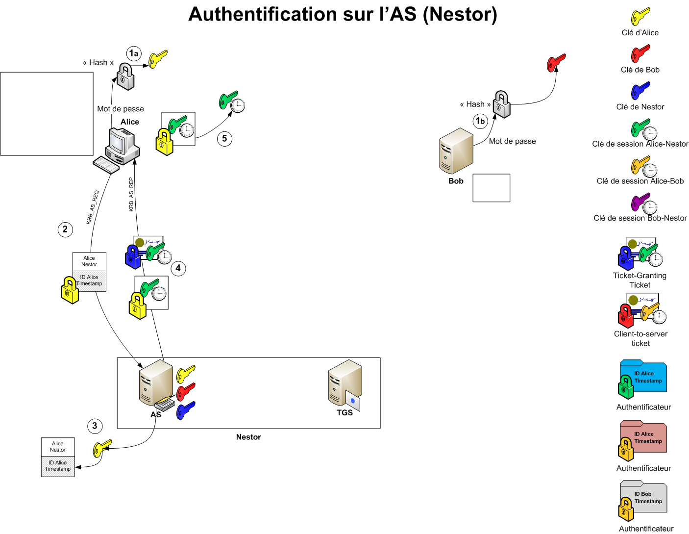
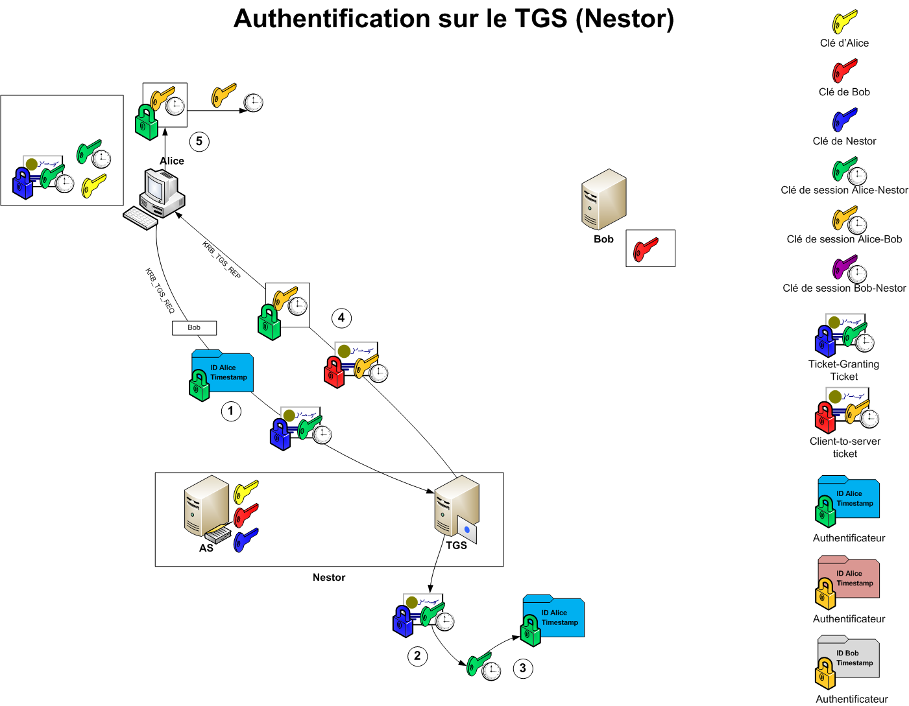
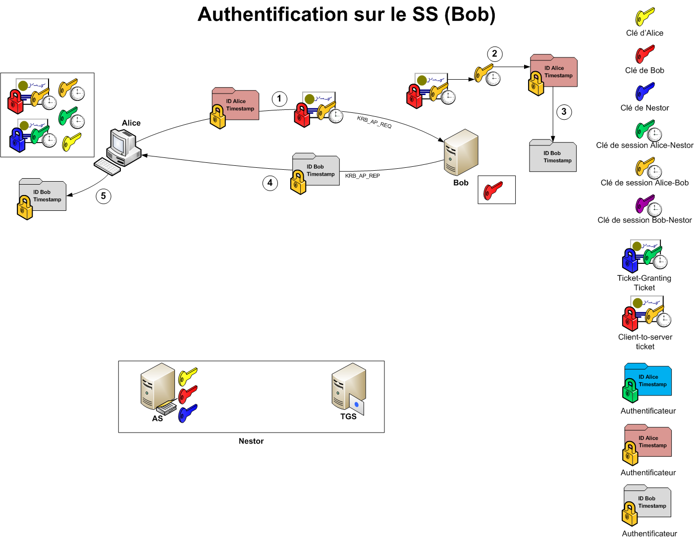

Service réseau - Service d'authentification Kerberos
dominique huguenin (dominique.huguenin@rpn.ch) -Introduction
Kerberos est un protocole d’authentification réseau qui repose sur un mécanisme de clés secrètes (chiffrement symétrique) et l’utilisation de tickets, et non de mots de passe en clair, évitant ainsi le risque d’interception frauduleuse des mots de passe des utilisateurs. Créé au Massachusetts Institute of Technology (MIT), il porte le nom grec de Cerbère, gardien des Enfers (Κέρϐερος). Kerberos a d’abord été mis en œuvre sur des systèmes Unix.[[1]]
Intervenants
-
Alice, le client, qui désire accéder à un serveur nécessitant une authentification. Le client est identifié via un Principal
-
Bob, un serveur dont les services demandent un utilisateur authentifié
-
Nestor, un centre de distribution de clé (Key Distribution Center). Il est composé du service d’émission de ticket, et du serveur d’authentification
- Le service d’émission de ticket (Ticket-Granting Service, TGS), qui a pour tache d’émettre des tickets cryptés.
- Le service d’authentification (Authentification Service, AS), chargé de vérifier l’identité des utilisateurs, en le couplant a un annuaire Active Directory ou LDAP
-
TGT, Ticket-Granting Ticket. Il donne un accès, pour la session en cours, au service d’émission de ticket (TGS). Un ticket TGT a une durée de validité, et son contenu est crypté à l’aide de la clé secrète du TGS
-
Client-to-server Ticket. Il permet de certifier que le client a le droit d’accéder au service
Authentification du client

- les clés secrètes d’Alice et de Bob sont générées. Pour cela, leur mot de passe est transformé en empreinte par une fonction de hashage. Nestor, en tant que contrôleur du domaine, est également capable de générer les clés d’Alice et Bob
- Alice va envoyer à Nestor un premier message, nommé KRB_AS_REQ (Kerberos Authentication Service Request). Ce message sera en deux parties, l’une en claire et l’autre cryptée. Cette dernière a été cryptée avec la clé secrète d’Alice.\La partie en clair contiendra l’identifiant d’Alice et le nom du service TGS voulu. Dans l’exemple, il s’agit de Nestor.\La partie cryptée contient son identifiant et un timestamp
- Nestor reçoit le message. La partie en clair contenant l’identifiant d’Alice, il va alors utiliser la clé correspondante pour tenter de décrypter le message. Il pourra ensuite vérifier que l’identifiant contenu dans le message est bien identique à celui envoyé en clair et que le timestamp est valide (« Qu’il a été généré peu de temps avant »)
- Nestor va envoyer un message nommé KRB_AS_REP (Kerberos Authentication Service Reply). Celui-ci va contenir le TGT et la clé de session d’Alice-Nestor, crypté avec la clé d’Alice.\Le TGT va contenir la clé de session Alice-Nestor et l’identifiant d’Alice, crypté avec la clé secrète de Nestor. Ainsi, Alice ne sera pas capable de décrypter le TGT
- Alice va recevoir le message de Nestor. Elle va en premier décrypter la clé de session Alice-Nestor à l’aide de sa propre clé privée, puis mettre le TGT et la clé de session Alice-Nestor en cache
Autorisation du client pour l’accès au service

- Alice va envoyer au service d’émission de ticket de Nestor un message nommé KRB_TGS_REQ (Kerberos Ticket-Granting Service Request). Ce message contiendra trois parties.\La première, en clair, est le nom du serveur de service demandé. Il s’agit ici de Bob\La seconde est un authentifiant, c’est-à-dire un message crypté avec la clé de session Alice-Nestor, destiné à prouver l’identité. L’authentifiant contiendra l’identifiant d’Alice et un timestamp\La troisième partie est le TGT reçu de l’AS lors de la pré-authentification
- le service d’émission de ticket va recevoir le TGT et le décrypter à l’aide de la clé privée de Nestor. Il pourra ainsi récupérer la clé de session Alice-Nestor.
- il va décrypter l’authentifiant à l’aide de la clé de session Alice-Nestor et récupérer l’identifiant. Il contrôlera que celle-ci corresponde à celle contenue dans le TGT et que le timestamp est valide
- si l’identité a été prouvée, il enverra à Alice un message nommé KRB_TGS_REP (Kerberos Ticket-Granting Service Reply). Celui-ci contiendra deux choses : \Une clé de session Alice-Bob, cryptée à l’aide de la clé de session Alice-Nestor\Un client-to-server ticket, servant de preuve d’identité au serveur de service. Il contient la clé de session Alice-Bob et l’identifiant d’Alice, et est crypté à l’aide de la clé secrète de Bob, afin qu’il soit le seul en mesure de le décrypter
- Alice va recevoir le message et décrypter la clé de session Alice-Bob à l’aide de la clé de session Alice-Nestor. Le client-to-server ticket et la clé de session Alice-Bob vont être mis en cache
Accès au service

- Alice va envoyer à Bob un message nommé KRB_AP_REQ (Kerberos Application Request). Celui contiendra un authentifiant et le client-to-server ticket.\L’authentifiant sera crypté à l’aide de la clé de session Alice-Bob, et contiendra l’identifiant d’Alice et un timestamp
- Bob va recevoir le client-to-server ticket et le décryptera à l’aide de sa propre clé secrète. Il obtiendra ainsi la clé de session Alice-Bob
- Bob peut, avec la clé de session Alice-Bob, décrypter l’authentifiant, et vérifier que l’identifiant qu’il contient correspond a celui du client-to-server ticket et que le timestamp est valide.
- Bob va envoyer à Alice un message nommé KRB_AP_REP (Kerberos Application Reply). Celui-ci contiendra un nouvel authentifiant. Celui-ci contiendra l’identifiant de Bob et le timestamp envoyé précédemment par Alice, incrémenté de 1. L’authentifiant sera crypté avec la clé de session Alice-Bob.
- Alice va recevoir l’authentifiant et le décrypter. Elle pourra vérifier que l’identifiant retourné correspond bien à l’identifiant du service de serveur demandé. Si c’est le cas, elle contrôlera le timestamp. S’il correspond à celui qu’elle avait envoyé, mais incrémenté de 1, cela signifie que Bob a été capable de décrypter son authentifiant, et donc qu’il s’agit bien du vrai serveur de service et non d’un usurpateur.
À partir de maintenant, Alice et Bob sont chacun en possession de la clé de session Alice-Bob. Ils peuvent donc communiquer de manière sécurisée entre eux
Serveur Kerberos - Installation et configuration
Configuration du DNS
- Configuration du DNS pour le nom kdc1.antiterre.lan. Mettre à jour la valeur du numéro de série (serial)
$ sudo vim /etc/bind/db.antiterre.lan
...
galatograd IN A 192.168.100.20
kdc1 IN CNAME galatograd
...
- vérification de la base de données DNS
$ named-checkzone antiterre.lan /etc/bind/db.antiterre.lan
- redémarrage du service bind
$ sudo service bind9 restart
- test de la résolution du nom
$ nslookup kdc1.antiterre.lan
Server: 192.168.100.10
Address: 192.168.100.10#53
kdc1.antiterre.lan canonical name = galatograd.antiterre.lan.
Name: galatograd.antiterre.lan
Address: 192.168.100.20
Installation et configuration du service kerberos
- installation des paquets sur Galatograd
sudo apt-get install krb5-kdc krb5-admin-server
- domaine (« realm ») Kerberos version 5 par défaut : ANTITERRE.LAN
- Serveur d’authentification du domaine Kerberos : kdc1.antiterre.lan
- Serveur administratif du domaine Kerberos : kdc1.antiterre.lan
information
L’installation des paquets exécute les configuration suivantes:
$ sudo dpkg-reconfigure krb5-config $ sudo dpkg-reconfigure krb5-kdc $ sudo dpkg-reconfigure krb5-user $ sudo dpkg-reconfigure krb5-admin-server
Création du nouveau domaine kerberos
information
La commande krb5_newrealm prend énormément de temps !!!
Ajouter à la machine virtuelle KVM un périphérique “Générateur de nombre aléatoire” (/dev/random).Ce périphérique accélère la création de la base kerberos
La configuration ci-dessous montre les lignes à ajouter dans la configuration de libvirt.
<rng model='virtio'> <backend model='random'>/dev/random</backend> <alias name='rng0'/> </rng>
$ sudo krb5_newrealm
This script should be run on the master KDC/admin server to initialize
a Kerberos realm. It will ask you to type in a master key password.
This password will be used to generate a key that is stored in
/etc/krb5kdc/stash. You should try to remember this password, but it
is much more important that it be a strong password than that it be
remembered. However, if you lose the password and /etc/krb5kdc/stash,
you cannot decrypt your Kerberos database.
Loading random data
Initializing database '/var/lib/krb5kdc/principal' for realm 'ANTITERRE.LAN',
master key name 'K/M@ANTITERRE.LAN'
You will be prompted for the database Master Password.
It is important that you NOT FORGET this password.
Enter KDC database master key: [kdcmasterpass]
Re-enter KDC database master key to verify: [kdcmasterpass]
Now that your realm is set up you may wish to create an administrative
principal using the addprinc subcommand of the kadmin.local program.
Then, this principal can be added to /etc/krb5kdc/kadm5.acl so that
you can use the kadmin program on other computers. Kerberos admin
principals usually belong to a single user and end in /admin. For
example, if jruser is a Kerberos administrator, then in addition to
the normal jruser principal, a jruser/admin principal should be
created.
Don't forget to set up DNS information so your clients can find your
KDC and admin servers. Doing so is documented in the administration
guide.
information
Problème:La commande reste bloquer sur “Loading random data”.
Work around:Stopper la commande et redémarrer la machine.
A essayer
# /usr/sbin/kdb5_util create -s
information
- Emplacement des fichiers de configuration
/ ... ├── etc │ ├── krb5.conf # configuration de client kerberos │ ... │ ├── krb5kdc │ │ ├── kadm5.acl │ │ ├── kdc.conf # configuration du serveur kerberos │ │ └── stash
- Emplacement des fichiers de la base de données kerberos
... ├── var │ ├── lib │ │ ├── krb5kdc │ │ │ ├── principal │ │ │ ├── principal.kadm5 │ │ │ ├── principal.kadm5.lock │ │ │ └── principal.ok
- Contenu du fichier de configuration du client kerberos
$ cat /etc/krb5.conf [libdefaults] default_realm = ANTITERRE.LAN ... [realms] ANTITERRE.LAN = { kdc = kdc1.antiterre.lan admin_server = kdc1.antiterre.lan } ...
- Contenu du fichier de configuration du serveur kerberos
$ sudo cat /etc/krb5kdc/kdc.conf [kdcdefaults] kdc_ports = 750,88 [realms] ANTITERRE.LAN = { database_name = /var/lib/krb5kdc/principal admin_keytab = FILE:/etc/krb5kdc/kadm5.keytab acl_file = /etc/krb5kdc/kadm5.acl key_stash_file = /etc/krb5kdc/stash kdc_ports = 750,88 max_life = 10h 0m 0s max_renewable_life = 7d 0h 0m 0s master_key_type = des3-hmac-sha1 supported_enctypes = aes256-cts:normal arcfour-hmac:normal des3-hmac-sha1:normal des-cbc-crc:normal des:normal des:v4 des:norealm des:onlyrealm des:afs3 default_principal_flags = +preauth }
Création d’un principal administrateur
$ sudo kadmin.local
Authenticating as principal root/admin@ANTITERRE.LAN with password.
kadmin.local: addprinc debian/admin
WARNING: no policy specified for debian/admin@ANTITERRE.LAN; defaulting to no policy
Enter password for principal "debian/admin@ANTITERRE.LAN": [debianadminpass]
Re-enter password for principal "debian/admin@ANTITERRE.LAN": [debianadminpass]
Principal "debian/admin@ANTITERRE.LAN" created.
kadmin.local: quit
- test
$ kinit debian/admin
Password for debian/admin@ANTITERRE.LAN: [debianadminpass]
$ klist
Ticket cache: FILE:/tmp/krb5cc_1000
Default principal: debian/admin@ANTITERRE.LAN
Valid starting Expires Service principal
02/21/11 16:53:50 02/22/11 02:53:50 krbtgt/ANTITERRE.LAN@ANTITERRE.LAN
renew until 02/22/11 16:53:43
Configuration des ACL
$ sudo vim /etc/krb5kdc/kadm5.acl
*/admin *
Redémarrage du service krb5-admin-server
$ sudo service krb5-admin-server restart
Test d’obtention d’un ticket pour debian/admin
$ kinit debian/admin
Password for debian/admin@ANTITERRE.LAN: [debianadminpass]
$ klist
Ticket cache: FILE:/tmp/krb5cc_1000
Default principal: debian/admin@ANTITERRE.LAN
Valid starting Expires Service principal
01/03/11 18:51:13 01/04/11 04:51:13 krbtgt/ANTITERRE.LAN@ANTITERRE.LAN
renew until 01/04/11 18:51:10
Configuration du DNS pour l’accès au service KERBEROS
- dans
/etc/bind/db.antiterre.lansur le serveur de nom ajouter:
...
_kerberos._udp.ANTITERRE.LAN. IN SRV 1 0 88 galatograd.antiterre.lan.
_kerberos._tcp.ANTITERRE.LAN. IN SRV 1 0 88 galatograd.antiterre.lan.
_kerberos-adm._tcp.ANTITERRE.LAN. IN SRV 1 0 749 galatograd.antiterre.lan.
_kpasswd._udp.ANTITERRE.LAN. IN SRV 1 0 464 galatograd.antiterre.lan.
...
$ named-checkzone antiterre.lan /etc/bind/db.antiterre.lan
$ sudo service bind9 restart
Client Kerberos - Installation et configuration
ATTENTION
Opérations à réaliser sur le poste client par exemple luna@antiterre.lan
Installation
as_client$ sudo apt-get install krb5-user sssd-krb5
- Royaume (« realm ») Kerberos version 5 par défaut : ANTITERRE.LAN
- Kerberos servers for your realm: kdc1.antiterre.lan
- Administrative server for your Kerberos realm: kdc1.antiterre.lan
La commande ci-dessous peut être exécuter si les paramètres n’ont pas pu être saisi lors de l’installation des paquets
as_client$ sudo dpkg-reconfigure krb5-config
information
Le service DNS contient les entrées pour trouvé le service KDC!
Répondre oui dans le cas contraire
- Ajouter les emplacements des serveurs Kerberos par défaut dans /etc/krb5.conf ?
- Serveurs Kerberos du domaine : kdc1.antiterre.lan
- Serveur administratif du domaine Kerberos : kdc1.antiterre.lan
la instruction précédente configure le fichier
/etc/krb5.conf$ cat /etc/krb5.conf [libdefaults] default_realm = ANTITERRE.LAN ... [realms] ANTITERRE.LAN = { kdc = kdc1.antiterre.lan admin_server = kdc1.antiterre.lan } ...
- Test
debian@luna:~$ kinit debian/admin
Password for debian/admin@ANTITERRE.LAN:
debian@luna:~$ klist
Ticket cache: FILE:/tmp/krb5cc_1000
Default principal: debian/admin@ANTITERRE.LAN
Valid starting Expires Service principal
02/21/11 18:24:12 02/22/11 04:24:12 krbtgt/ANTITERRE.LAN@ANTITERRE.LAN
renew until 02/22/11 18:23:54
Configuration du service SSSD pour kerberos
SSSD signifie System Security Services Daemon et il s’agit en fait d’un ensemble de service qui gèrent l’authentification, l’autorisation et les informations sur les utilisateurs et les groupes provenant de diverses sources réseau.
-
Créer le fichier
/etc/sssd/sssd.confdebian@luna:~$ sudo vim /etc/sssd/sssd.conf debian@luna:~$ sudo cat /etc/sssd/sssd.conf [sssd] config_file_version = 2 services = pam domains = antiterre.lan [pam] [domain/antiterre.lan] id_provider = proxy proxy_lib_name = files auth_provider = krb5 krb5_server = kdc1.antiterre.lan krb5_kpasswd = kdc1.antiterre.lan krb5_realm = ANTITERRE.LAN -
ajuster les permissions et redémarrer le service sssd
debian@luna:~$ sudo chown root:root /etc/sssd/sssd.conf debian@luna:~$ sudo chmod 0600 /etc/sssd/sssd.conf debian@luna:~$ sudo systemctl start sssd
Création d’un utilisateur
Création d’un principal Kerberos
ATTENTION
Opérations à réaliser sur galatograd.antiterre.lan
$ kadmin
Authenticating as principal debian/admin@ANTITERRE.LAN with password.
Password for debian/admin@ANTITERRE.LAN:
kadmin: addprinc robick
WARNING: no policy specified for robick@ANTITERRE.LAN; defaulting to no policy
Enter password for principal "robick@ANTITERRE.LAN": [robickpass]
Re-enter password for principal "robick@ANTITERRE.LAN": [robickpass]
Principal "robick@ANTITERRE.LAN" created.
kadmin: quit
Création d’un utilisateur local
ATTENTION
Opérations à réaliser sur le poste client par exemple luna@antiterre.lan
debian@luna:~$ sudo adduser robick
Adding user `robick' ...
Adding new group `robick' (1001) ...
Adding new user `robick' (1001) with group `robick' ...
Creating home directory `/home/robick' ...
Copying files from `/etc/skel' ...
Current Kerberos password: [robickpass]
Enter new Kerberos password: [robickpass]
Retype new Kerberos password: [robickpass]
passwd : le mot de passe a été mis à jour avec succès
Modification des informations relatives à l'utilisateur robick
Entrez la nouvelle valeur ou « Entrée » pour conserver la valeur proposée
Nom complet []: Eugen Robick
N° de bureau []:
Téléphone professionnel []:
Téléphone personnel []:
Autre []:
Is the information correct? [Y/n]
Vérification de l’utilisateur
$ kinit robick
Password for robick@ANTITERRE.LAN: [robickpass]
$ klist
Ticket cache: FILE:/tmp/krb5cc_1000
Default principal: robick@ANTITERRE.LAN
Valid starting Expires Service principal
01/03/11 20:29:12 01/04/11 06:29:12 krbtgt/ANTITERRE.LAN@ANTITERRE.LAN
renew until 01/04/11 20:29:09
Test de login
debian@luna:~$ su -l robick
Password:
robick@luna:~$ klist
Ticket cache: FILE:/tmp/krb5cc_1001_YF6o51
Default principal: robick@ANTITERRE.LAN
Valid starting Expires Service principal
02/21/11 18:49:16 02/22/11 04:49:16 krbtgt/ANTITERRE.LAN@ANTITERRE.LAN
renew until 02/22/11 18:49:15
Changement du mot de passe
robick@luna:~$ kpasswd
Password for robick@ANTITERRE.LAN: [robickpass]
Enter new password: [robick]
Enter it again: [robick]
Password changed.
information La commande
passwdpermet également de changer le mot de passe kerberosrobick@luna:~$ passwd Current Kerberos password: Enter new Kerberos password: Retype new Kerberos password: passwd: password updated successfully
ATTENTION Le serveur Kerberos permet uniquement d’authentifier un utilisateur. Cette utilisateur doit exister sur la machine local ainsi que dans la base de données kerberos
Commandes
kinit - permet d’obtenir de kerberos un TGT (ticket-granting ticket)
KINIT(1)
NAME
kinit - obtain and cache Kerberos ticket-granting ticket
SYNOPSIS
kinit [-V] [-l lifetime] [-s start_time] [-r renewable_life]
[-p | -P] [-f | -F] [-a] [-A] [-C] [-E] [-v] [-R] [-k [-t
keytab_file]] [-c cache_name] [-n] [-S service_name][-T armor_ccache]
[-X attribute[=value]] [principal]
klist - afficher les tickets en cache
KLIST(1)
NAME
klist - list cached Kerberos tickets
SYNOPSIS
klist [-e] [[-c] [-f] [-s] [-a [-n]]] [-k [-t] [-K]]
[cache_name | keytab_name]
kdestroy - permet de supprimer le ticket
KDESTROY(1)
NAME
kdestroy - destroy Kerberos tickets
SYNOPSIS
kdestroy [-q] [-c cache_name]
kpasswd - permet de changer le mot de passe d’un utilisateur Kerberos
KPASSWD(1)
NAME
kpasswd - change a user's Kerberos password
SYNOPSIS
kpasswd [principal]
kadmin - programme d’administration de la base de données Kerberos
KADMIN(1)
NAME
kadmin - Kerberos V5 database administration program
SYNOPSYS
kadmin [-O | -N] [-r realm] [-p principal] [-q query]
[[-c cache_name] | [-k [-t keytab]] | -n] [-w password] [-s admin_server[:port]
kadmin.local [-r realm] [-p principal] [-q query]
[-d dbname] [-e "enc:salt ..."] [-m] [-x db_args]